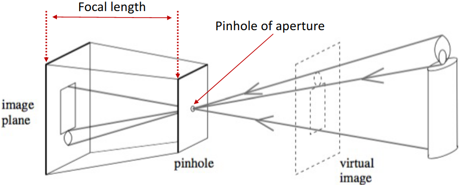
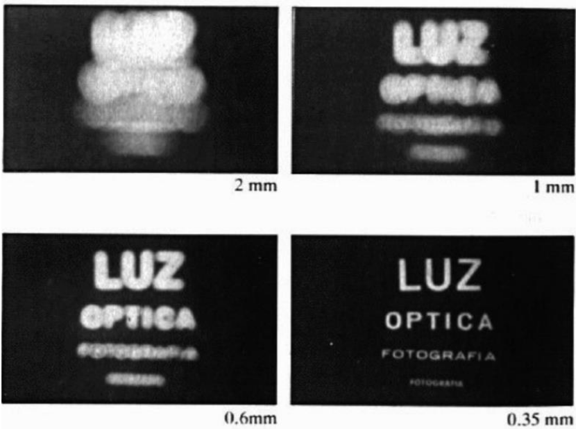
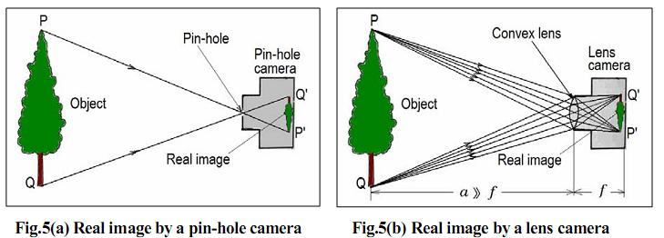
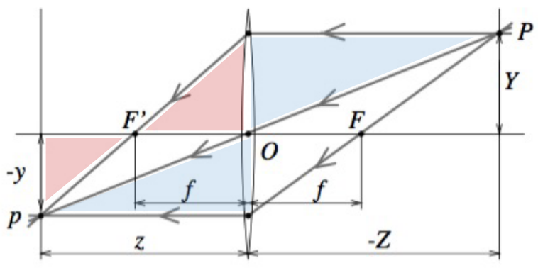
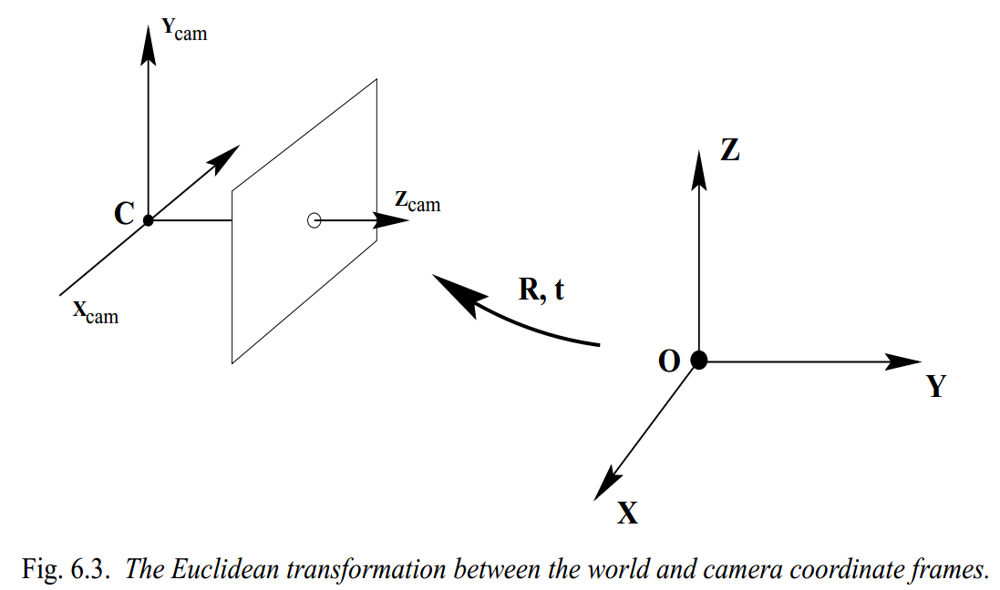

Pihole camera
Goal
Presenting pihole camera model and how to project the world into pixel
Pihole camera
The simplest camera model is pinhole model which decribes the mathematical relationship of the projection of points in 3d-space onto a image plane.

Design a simple camera system – a system that can record an image of an object or scene in the 3D world. This camera system can be designed by placing a barrier with a small aperture between the 3D object and a photographic film or sensor. As shown in the image above, each point on the 3D object emits multiple rays of light outwards. Without a barrier in place, every point on the film will be influenced by light rays emitted from every point on the 3D object. Due to the barrier, only one (or a few) of these rays of light passes through the aperture and hits the film. Therefore, we can establish a one-to-one mapping between points on the 3D object and the film. The result is that the film gets exposed by an “image” of the 3D object by means of this mapping. This simple model is known as the pinhole camera model.
Issues with pinhole camera

- Larger aperture \(\rightarrow\) greater number of light rays that pass through the aperture \(\rightarrow\) blur
- Smaller aperture \(\rightarrow\) fewer number of light rays that pass through the aperture \(\rightarrow\) darkness (+ diffraction)
\(\rightarrow\) Solution: add a lens to replace the aperture! Lens: an optical element that focuses light by means of refraction
Lenses
Lens: an optical element that focuses light by means of refraction

Thin lens model
Key properties (follows from Snell’s law):
- Rays passing through 0 are not refracted
- Rays parallel to the optical axis are focused on the focal point \(F'\)
- All rays passing through P are focused by the thin lens on the point \(p\)

Similar triangles
\[\begin{matrix} \frac{y}{Y}=\frac{z}{Z}\\ \frac{y}{Y}=\frac{z-f}{f}=\frac{z}{f}-1 \end{matrix}. \Rightarrow \color{Red}\frac{1}{z} + \frac{1}{Z} = \frac{1}{f}\]Key points:
- The equations relating the positions of \(P\) and \(p\) are exactly the same as under pinhole perspective if one considers \(z\) as focal length (as opposed to \(f\)), since \(P\) and \(p\) lie on a ray passing through the center of the lens.
- Points located at a distance \(−Z\) from \(O\) will be in sharp focus only when the image plane is located at a distance \(z\) from \(O\) on the other side of the lens that satisfies the thin lens equation.
- In practice, objects within some range of distances (called depth of field or depth of focus) will be in acceptable focus.
- Letting \(Z \rightarrow \infty\) shows that \(f\) is the distance between the center of the lens and the plane where distant objects focus.
- In reality, lenses suffer from a number of aberrations.
Perspective projection
Project a point \(P_{W}\) in world coord into a point \(p(u, v)\) in pixel coord:
- Step 1: Project a point \(P_{W}\) in world coord into a point \(P_{C}\) in cam coord
- Step 2: Project \(P_{C}\) into a point \(p(x, y)\) in the image plane
- Step 3: Project \(p(x, y)\) into a pixel \((u, v)\) in pixel coord
Step 1 Project a point in world coord into a point in cam coord
Goal: Projecting \(P_{W}(X_{W}, Y_{W}, Z_{W})\) (World coord) \(\rightarrow\) \(P_{C}(X_{C}, Y_{C}, Z_{C})\) (Cam coord).
Assumption: pinhole camera model (all results also hold under thin lens model, assuming camera is focused at ∞)

We have \(P_{C} = t + RP_{W}\), where \(t\) and \(R\) are the translation vector the rotation matrix relating camera and world frames respectively. Presentation in in homogeneous coordinates:
\[\begin{pmatrix} P_{C}\\ 1 \end{pmatrix}_{(4\times1)} = \begin{bmatrix} R & t\\ 1 & 1 \end{bmatrix}_{(4\times4)} \begin{pmatrix} P_{W}\\ 1 \end{pmatrix}_{(4\times1)}\]\(\rightarrow\) Requiements extrinsics parameters: translation vector \(t_{(3 \times 1)}\) and the rotation matrix \(R_{(3 \times 3)}\).
Step 2 Project the point in cam coord into a point in the image plane
Goal: Projecting \(P_{C}(X_{C}, Y_{C}, Z_{C})\) (World coord) \(\rightarrow\) \(p(x, y)\) (image plane)

We have:
\[\begin{pmatrix} x\\ y \end{pmatrix} = \begin{pmatrix} f\frac{X_{C}}{Z_{C}}\\ f\frac{Y_{C}}{Z_{C}} \end{pmatrix}\]Step 3 Project the point in the image plane into a pixel in pixel coord
Goal: Projecting \(p(x, y)\) (image plane) \(\rightarrow\) \(p(u, v)\) (pixel coord)
Actual origin of the camera coordinate system is usually at a corner (e.g., top left, bottom left):
\[\begin{pmatrix} \widetilde{x}\\ \widetilde{y} \end{pmatrix} = \begin{pmatrix} f\frac{X_{C}}{Z_{C}} + \widetilde{x}_{0}\\ f\frac{Y_{C}}{Z_{C}} + \widetilde{y}_{0} \end{pmatrix}\]Converting from image coordinates (\(\widetilde{x}, \widetilde{y}\)) to pixel coordinates \((u, v)\):
\(\begin{pmatrix} u\\ v \end{pmatrix} = \begin{pmatrix} k_{x}\widetilde{x}\\ k_{x}\widetilde{y} \end{pmatrix} = \begin{pmatrix} k_{x}f\frac{X_{C}}{Z_{C}} + k_{x}\widetilde{x}_{0}\\ k_{y}f\frac{Y_{C}}{Z_{C}} + k_{y}\widetilde{y}_{0} \end{pmatrix} \\ \begin{pmatrix} u\\ v \end{pmatrix} = \begin{pmatrix} \alpha \frac{X_{C}}{Z_{C}} + u_{0}\\ \beta \frac{Y_{C}}{Z_{C}} + v_{0} \end{pmatrix}\) (Nonlinear transformation)
where \(k_{x}\) and \(k_{y}\) be the number of pixels per unit distance in image coordinates in the x and y directions, respectively.
Homogeneous coordinates
Inhomogenous \(\rightarrow\) homogeneous
\[\begin{pmatrix} x\\ y \end{pmatrix} \Rightarrow \lambda \begin{pmatrix} x\\ y\\ 1 \end{pmatrix}, \begin{pmatrix} x\\ y\\ z \end{pmatrix} \Rightarrow \lambda \begin{pmatrix} x\\ y\\ z\\ 1 \end{pmatrix}\]Homogenous \(\rightarrow\) inhomogeneous
\[\begin{pmatrix} x\\ y\\ w \end{pmatrix} \Rightarrow \lambda \begin{pmatrix} x/w\\ y/w\\ \end{pmatrix}, \begin{pmatrix} x\\ y\\ z\\ w \end{pmatrix} \Rightarrow \lambda \begin{pmatrix} x/w\\ y/w\\ z/w \end{pmatrix}\]Perspective projection in homogeneous coordinates
We have:
\[\begin{bmatrix} \alpha & 0 & u_{0}\\ 0 & \beta & v_{0}\\ 0 & 0 & 1 \end{bmatrix} \begin{bmatrix} 1 & 0 & 0 & 0\\ 0 & 1 & 0 & 0\\ 0 & 0 & 1 & 0 \end{bmatrix} \begin{pmatrix} X_{C}\\ Y_{C}\\ Z_{C}\\ 1 \end{pmatrix} = \begin{pmatrix} \alpha X_{C} + u_{0}Z_{C}\\ \beta Y_{C} + v_{0}Z_{C}\\ Z_{C} \end{pmatrix}\]or,
\[\begin{bmatrix} \alpha & 0 & u_{0} & 0\\ 0 & \beta & v_{0} & 0\\ 0 & 0 & 1 & 0 \end{bmatrix} \begin{pmatrix} X_{C}\\ Y_{C}\\ Z_{C}\\ 1 \end{pmatrix} = \begin{pmatrix} \alpha X_{C} + u_{0}Z_{C}\\ \beta Y_{C} + v_{0}Z_{C}\\ Z_{C} \end{pmatrix}\]In homogeneous coordinates, the mapping is linear:
\[p^{h} = \left [ K 0 \right ]P^{h}_{C}\]where \(p^{h}\) and \(P_{C}\) are point \(p^{h}\) in homogeneous pixel coordinates and point \(P_{C}\) in homogeneous camera coordinates.
Skewness in some (rare) cases:
\[K = \begin{bmatrix} \alpha & \gamma & u_{0}\\ 0& \beta & v_{0}\\ 0&0 & 1 \end{bmatrix}\]When is \(\gamma \neq 0\)?
- x- and y-axis of the camera are not perpendicular (unlikely)
- For example, as a result of taking an image of an image
Finally, we obtain:
\[\textcolor{red} { \begin{pmatrix} u\\ v\\ - \end{pmatrix} = \begin{bmatrix} \alpha & \gamma & u_{0}\\ 0& \beta & v_{0}\\ 0&0 & 1 \end{bmatrix} \begin{bmatrix} 1 & 0 & 0 & 0\\ 0 & 1 & 0 & 0\\ 0 & 0 & 1 & 0 \end{bmatrix} \begin{bmatrix} R & t\\ 1 & 1 \end{bmatrix} \begin{pmatrix} X_{W}\\ Y_{W}\\ Z_{W}\\ 1 \end{pmatrix} }\]or,
\[\begin{pmatrix} u\\ v\\ - \end{pmatrix} = KP \begin{bmatrix} R & t\\ 1 & 1 \end{bmatrix} \begin{pmatrix} X_{W}\\ Y_{W}\\ Z_{W}\\ 1 \end{pmatrix},\]where \(K\), \(P\), \(\begin{bmatrix}R & t\\ 1 & 1\end{bmatrix}\), \(C = KP\begin{bmatrix} R & t\\ 1 & 1 \end{bmatrix}\) are Intricsic parameters matrix (fundamental characteristics of the camera), Projection matrix, Extrinsic parameters (depend on where camera is) and Camera matrix, respectively.
\(\rightarrow\) Requiements intrinsics parameters:
- \((\alpha, \beta)\): aspect ratio (1 unless pixels are not square) in the x and y directions
- (\(u_{0}, v_{0}\)): principal point (\((0, 0)\) unless optical axis doesn’t intersect projection plane at origin)
- \(\gamma\): skew (0 unless pixels are shaped like rhombi/parallelograms)
Degrees of freedom:
-
Intrinsics parameters: 5 params \((\alpha, \beta)\), (\(u_{0}, v_{0}\)), \(\gamma\) -
Extrinsics parameters: 6 params \(t\), \(R\)
Following Calibration post to find these parameters!
References
Enjoy Reading This Article?
Here are some more articles you might like to read next: